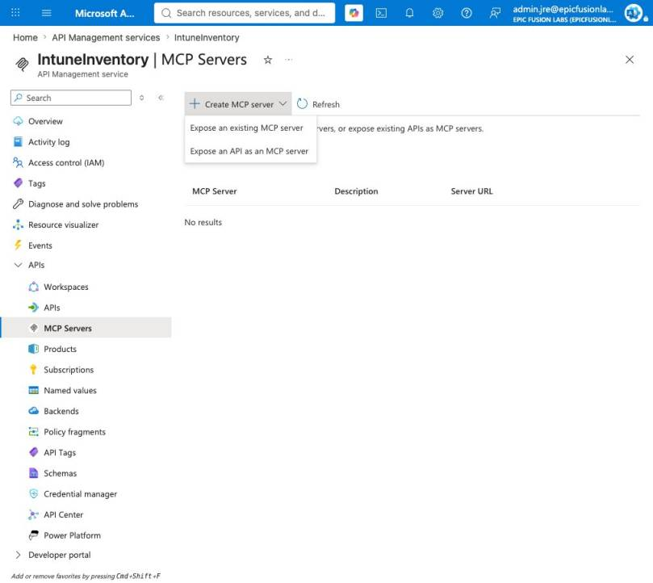
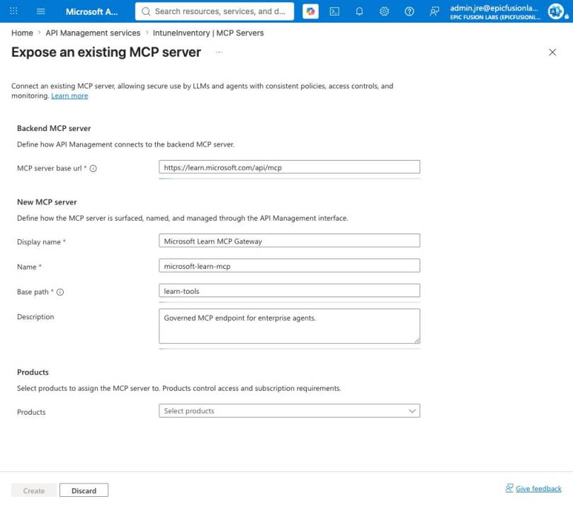

MCP makes it easy to connect an AI agent to tools. That is useful for a demo, but an enterprise needs more than a connection string. It needs identity, a controlled tool surface, rate limits, monitoring and a clear owner. In this blog post I show how I would use Azure API Management MCP as the control plane between agents and enterprise tools.
What problem does an MCP control plane solve?
Without a gateway, every agent connects directly to every MCP server. Authentication, logging and limits are then implemented differently by each team. Over time, nobody has a complete view of which tools are exposed, who can call them and what happens when an agent starts looping.
Azure API Management (APIM) does not replace the MCP server. It sits in front of it and gives you one place to apply API governance. Microsoft’s MCP server overview for APIM currently describes two patterns:
- expose and govern an existing remote MCP server;
- expose selected operations from an existing REST API as MCP tools.
This distinction is important. The first pattern keeps the server’s MCP implementation. The second pattern helps a team reuse a managed REST API without building a separate MCP server first.
How does this look in a live APIM instance?
In my lab, I opened an existing API Management service and selected APIs > MCP Servers. The current portal offers both creation paths in the same menu.

For the live walkthrough I selected Expose an existing MCP server and used the Microsoft Learn MCP endpoint as a safe backend example. I entered a display name, a stable internal name and a dedicated base path. I deliberately stopped before selecting Create, so the screenshot shows the real configuration without adding a test server to the environment. The full portal flow is also documented in Microsoft’s existing MCP server guide.

The portal also allows the new MCP server to be associated with an APIM product. That is not just an organizational field. Products can define subscriptions and help separate consumer groups.
Which five controls matter most?
1. Identity before connectivity
My first question is not whether the agent can reach the MCP URL. It is which identity is allowed to call which tools.
For a quick lab, an APIM subscription can prove the routing path. For production, I prefer Microsoft Entra ID and OAuth wherever the backend and client support it. The gateway should validate the caller and forward only the credentials the backend actually needs.
Note: If the external MCP server requires authorization, it must use a standards-compliant authorization flow. A custom token trick that only one client understands is difficult to govern and difficult to rotate.
An MCP server often contains more tools than one agent needs. A finance agent should not automatically receive administration tools because both happen to be available on the same server.
I would create separate gateway surfaces for clear business capabilities. Examples are knowledge-read, ticket-create or device-inventory-read. This makes the endpoint name meaningful and reduces the impact of a wrong tool call.
APIM also lets you select which operations are exposed when a REST API is exported as MCP. I would use this aggressively. A smaller tool catalogue reduces permission risk and also makes tool selection easier for the model.
3. Rate limits for agent loops
Human API usage is normally bursty but understandable. Agents can retry, branch and loop. One user request can produce many tool calls in a few seconds.
A simple IP-based limit is useful in a lab:
<inbound>
<base />
<rate-limit-by-key
calls="5"
renewal-period="30"
counter-key="@(context.Request.IpAddress)" />
</inbound>
For production I would prefer a counter key based on a validated application, agent or user identity. The correct limit also depends on the tool. Five search calls might be normal. Five device-deletion calls are not.
4. Preserve MCP streaming
This is the easiest mistake to make. MCP uses streaming behavior, and a normal-looking APIM policy or logging configuration can accidentally buffer the response.
Do not access context.Response.Body in MCP policies. Also set the global Frontend Response payload bytes logging value to 0 when diagnostics apply to all APIs. Reading or logging the response body can interfere with streaming and can also store sensitive tool output.
This is one reason why I would not copy an existing REST API policy set onto an MCP endpoint without review. The transport behavior is different even when both use HTTP.
I want enough telemetry to answer who called which gateway, which backend was used, how long it took and whether a policy blocked the request. I do not want full prompts, credentials or tool responses in general-purpose logs.
A small trace can add useful routing context:
<trace source="MCP Gateway" severity="information">
<message>MCP tool call</message>
<metadata name="agent-id"
value='@(context.Request.Headers.GetValueOrDefault("agent-id", "n/a"))' />
</trace>
I would standardize a small metadata contract for every agent: agent ID, application ID, environment, correlation ID and approved data classification. These values make incidents traceable without logging the business payload.
What architecture would I use?
My default production flow would be:
Agent client -> Microsoft Entra ID -> APIM MCP endpoint -> policy checks -> MCP server -> approved backend systems
The gateway is the enforcement point, but it is not the complete security model. The backend still needs its own identity and authorization. A compromised gateway credential must not turn into unrestricted access to every downstream system.
I would also register the MCP server and its owner in an API catalogue. Every gateway should have:
- a business owner;
- a technical owner;
- an approved consumer list;
- a data classification;
- a documented tool list;
- an expiry or review date.
This turns an MCP endpoint from a developer URL into a managed enterprise capability.
Where are the current limitations?
APIM’s MCP support is moving quickly, but there are current limits to design around:
- an external server must support MCP version
2025-06-18or later; - Streamable HTTP and SSE are supported transports;
- external MCP servers can expose tools and resources, but prompts are not currently supported;
- REST APIs exported as MCP expose tools, not resources or prompts;
- MCP server capabilities are not currently supported in APIM workspaces.
I would check these points again before a production rollout because preview and platform behavior can change.
How does this fit with Microsoft Foundry?
Microsoft Foundry is where I build, evaluate and operate the agent. APIM is where I govern reusable network-accessible tools. The two layers solve different problems.
The same principle applies to Agent Skills. A skill teaches the agent how to perform a workflow. MCP connects the agent to a live capability. APIM governs that live capability. I explain the first distinction in my Agent Skills vs MCP guide and the surrounding security model in Secure Microsoft Foundry.
What would I implement first?
I would start with one read-only MCP server and one agent. Put the server behind APIM, validate the caller with Entra ID, expose only the required tools and add conservative rate limits. Then test normal calls, failed authentication, a retry loop and a streaming response.
Only after those four tests are clean would I add write operations. This keeps the first implementation small enough to understand and gives the platform team a reusable pattern for the next server.
MCP solves connectivity. Azure API Management MCP can provide the missing control plane around that connectivity. The real value is not another URL. It is one consistent place to decide who can use which tool, under which limits and with which evidence.
I hope this gives you a practical architecture for moving MCP from a demo into a governed enterprise environment.
Stay healthy, Cheers Jannik